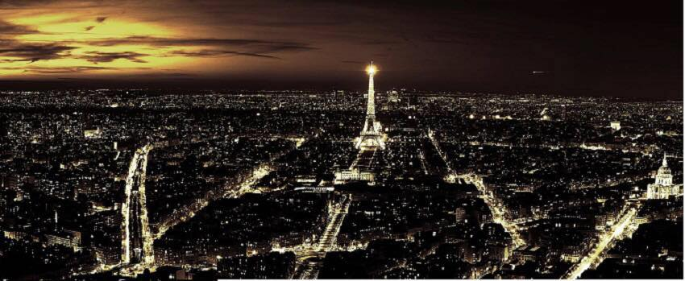

|

This is the fifth and last issue in my first year as editor-in-chief of the Diplomatic Pouch Zine. And what an issue it has become. Not only did we create a complete Christmas special, but we also have a good number of theme-related articles, puzzles, poems, letters and more. The revived Diplomatic Pouch Facebook page is now really buzzing and a great way to communicate with our readers, either through posts or through Facebook Messenger. Don't hesitate to join in and challenge us in any form. The theme for this issue was engendered by the events in November with the terrorist attacks in Paris. A French 9/11, but let us not forget, Lebanon, Libya and elsewhere in the world, happening at or around the same time and ever since then. It was interesting to observe how the debate quickly shifted from an "All Muslims are terrorists" stance to "IS is not Islam"; that the war they're fighting is not one of East versus West (good for propaganda and recruitment though), but for a state of their own, displacing Shiites, Kurds, Turks and any other of the multitude of ethnicities in the area. Among their preferred tactics, like many invading armies in the past, are fear and terror. And that became the theme: "Fear, Terror and the City of Lights", as adopted to the game of Diplomacy. Because, coincidence or not, in just the same weekend and not far from the places where the attacks took place, the FDC tournament was held in Paris, part of the European Diplomacy Tour. You can read plenty about this event in this issue. But what if we apply this to the Game? Fear to me is what you try to instill in others to get them on your side and try (but often fail) to see through when you're the target. Terror is the terror of the clock, the approaching deadline when your orders are still in flux. But the two could go hand in hand when manipulated by a master player. More can be said about this, so if you have any ideas, take your electronic device and start typing or swiping. And the City of Lights is Paris, capital of France, highly ranked as an excellent power to play, whether by beginners or experts, as it often does well in openings and has one of the highest solo averages. Toby Harris has devoted an Experts article to this Power. Certainly worth the read. There's also a small improvement to the Zine itself. Clicking the icons in the table of contents will bring you to the list of articles in the same category as the article following the icon. E.g. if you want to read more humor articles, click on the mask in front of Harold's poem on the index page. This change has two advantages: It improves navigation for the reader and it forces us, the editorial staff, to update the page with the full list of aricles. Since this has been neglected in the past, it will take a while to sort it all out for previous issues. But this and future issues should behave correctly. Enjoy the Pouch!
If you wish to e-mail feedback on this article to the author, and clicking on the envelope above does not work for you, feel free to use the "Dear DP..." mail interface. |